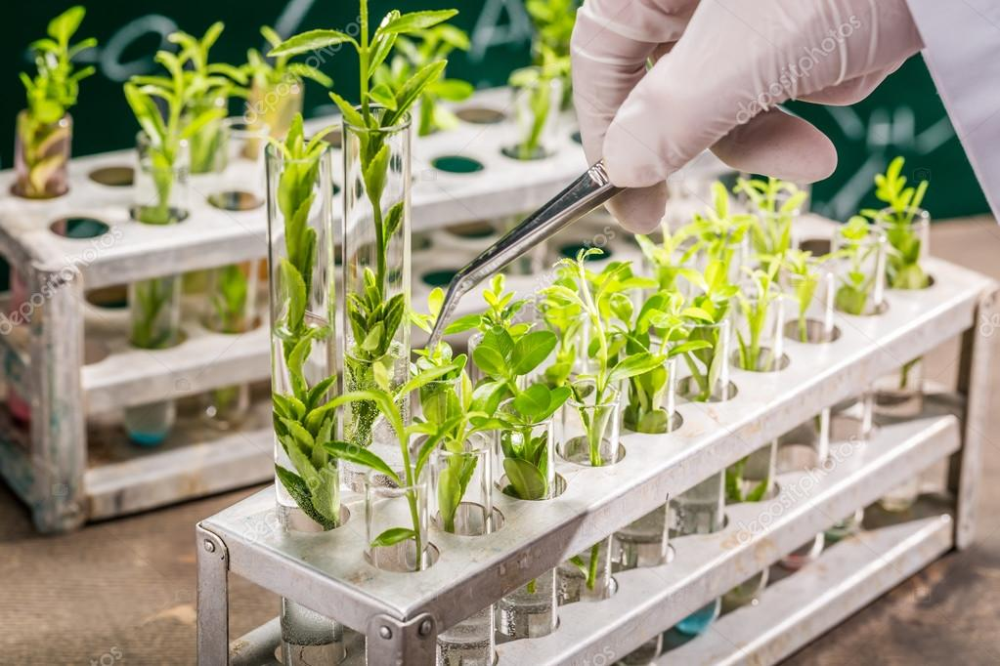
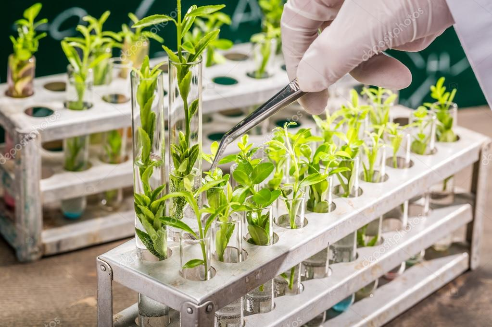

- Melhoramento genético das plantas
- linha 2
 
 
O aprimoramento genético de cultivares faz parte da história da agricultura desde sua origem. Apesar de parecer moderno, a forma mais básica do melhoramento genético acontece desde o início da agricultura, através da seleção e triagem de sementes e plantas. Inicialmente, o aprimoramento genético era obtido por meio da observação e seleção das plantas, com a finalidade de priorizar os melhores exemplares – aqueles que continham excelentes características e as mais desejadas pelo produtor e para o consumo. Neste método de seleção os produtores separavam as plantas que continham características superiores de cultivo, como o sabor mais agradável, ou a resistência ao clima, descartando os outros exemplares que não se enquadraram nos seus critérios de seleção. Dessa forma, o melhoramento genético surge como uma forma básica de interferência humana na evolução dos cultivares através da escolha das melhores características genéticas. Com a evolução da ciência, da tecnologia e das técnicas de engenharia genética, as práticas de melhoramento genético avançaram para novos patamares. Além da identificação e seleção das melhores variedades, sementes e exemplares das plantas, e do cruzamento entre diferentes espécies, atualmente existem técnicas que selecionam no DNA das plantas os genes que possuem as características desejadas.